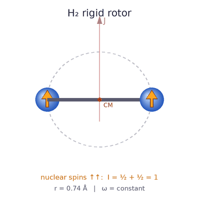
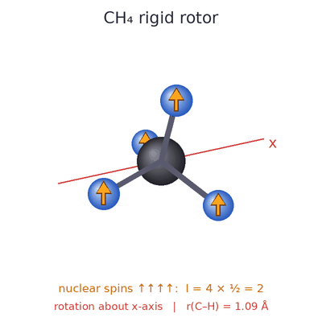
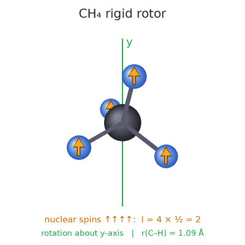
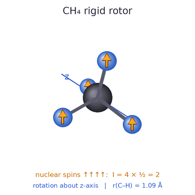
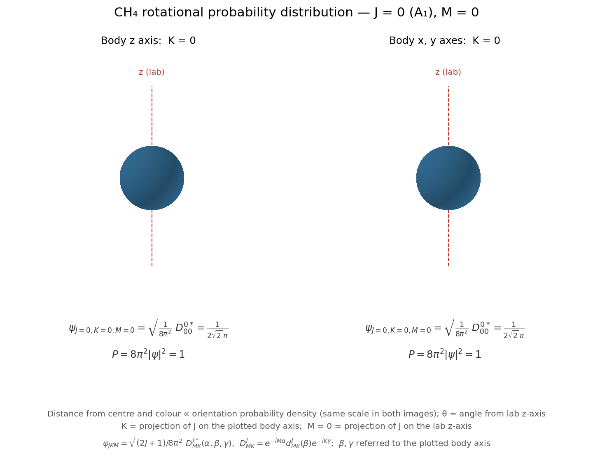
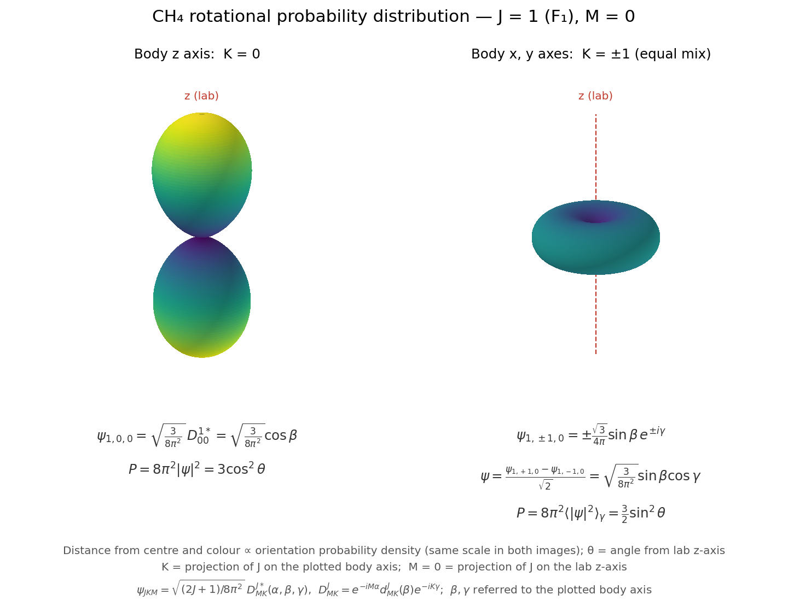

My name is Nathan McLane and I am a 5th year Chemical Physics P.h.D candidate in Dr. Leah Dodson's group.
My main thesis work is enriching specific quantum states of molecular hydrogen, methane and water using cryogenic porous materials or iceous species. Particularly, I want to enrich specific nuclear-spin isomers (NSI) of these molecules.
Below are a list of useful notes I have compiled and used through this website.
Lecture notes by Dr. Alexander Sokolov.Click here to see my PowerPoint presentations I have given to other students. This is at a personal interest level, I am by no means an expert on these subjects.
I have also made some Kahoots to help with understanding.
Click here for the Hartree-Fock Kahoot.Nuclear-spin isomers (NSI) are the nuclear spin-states allowed to identical permutable nuclei.
Good question.

Ortho-H2 (nuclear spin I = 1) correlates with odd J states and para-H2 (I = 0) correlates with even J states, so that the total wavefunction is antisymmetric under exchange of the two protons. Converting between the two nuclear spin isomers requires an operator that is odd under exchange, such as I1 − I2, which turns a symmetric (triplet) spin state into an antisymmetric (singlet) one. The molecule's Hamiltonian cannot contain such a term on its own, because the two protons are identical and the Hamiltonian must be even under exchange. Nor can it be paired with a rotational or spatial operator to make an allowed term. Pairing it with J gives (I1 − I2)·J, which is still odd under exchange. Pairing it with the bond direction n gives (I1 − I2)·n, which is even under exchange but odd under spatial inversion, and the Hamiltonian must be even under inversion as well. Both are therefore forbidden, and an isolated H2 molecule does not convert between ortho and para.



Below is the J=0 and J=1 rotational states of methane


Wigner D matricesAnother way to determine weights of spin-states is through a simple, yet elegant derivation using angular momentum algebra devised by Takeshi Oka (citation). The "almighty formula" for all possible derivations is given by
$$D_{I_1} \otimes D_{I_2} = D_{I_1 + I_2} \oplus D_{I_1 + I_2 - 1} \oplus \cdots \oplus D_{|I_1 - I_2|}$$This equation can be applied to any possible NSI-containing molecular species. As an example, the derivation for $H_2$ can be done by
$$D_{1/2} \otimes D_{1/2} = D_1 \oplus D_0$$In this case the subscript denotes the combined total nuclear spin $I$, so we have two states with $I=1$ and $I=0$, with degeneracies of 3 and 1, respectively, based on $2I+1$. An even more powerful use of this method is deducing the irreducible representations of a spin state. To show this, using $CH_4$ as an example gives
$$D_{1/2} \otimes D_{1/2} \otimes D_{1/2} \otimes D_{1/2} = (D_{1/2} \otimes D_{1/2}) \otimes (D_{1/2} \otimes D_{1/2}) = (D_1 \oplus D_0) \otimes (D_1 \oplus D_0)$$ $$(D_1 \oplus D_0) \otimes (D_1 \oplus D_0) = (D_1 \otimes D_1) \oplus 2(D_1 \otimes D_0) \oplus (D_0 \otimes D_0)$$ $$(D_1 \otimes D_1) \oplus 2(D_1 \otimes D_0) \oplus (D_0 \otimes D_0) = D_2 \oplus D_1 \oplus D_0 \oplus 2D_1 \oplus D_0 = D_2 \oplus 3D_1 \oplus 2D_0$$where, through inspection, we have states $I = 2, 1, 0$ with irreducible representations $A, T, E$, derived from their respective preceding coefficients.
MTensor products